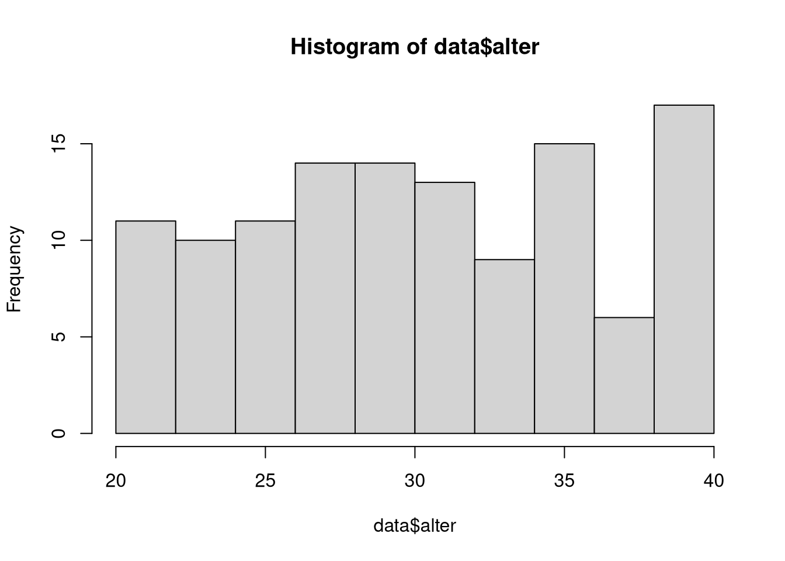
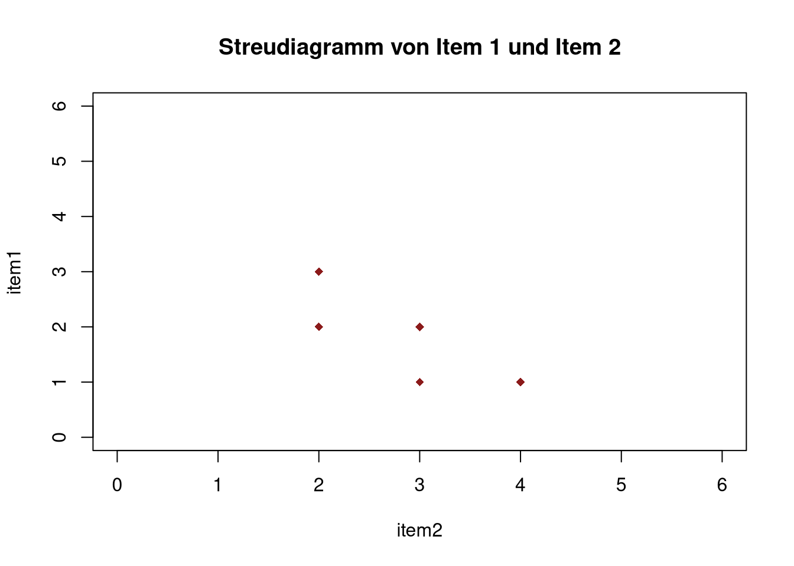
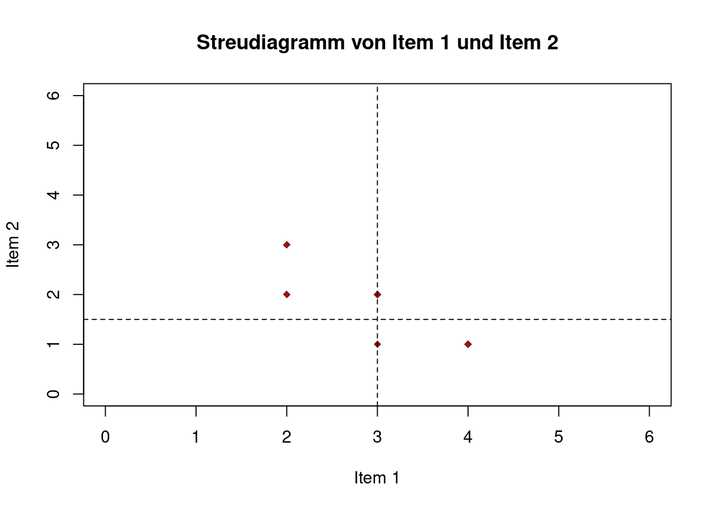
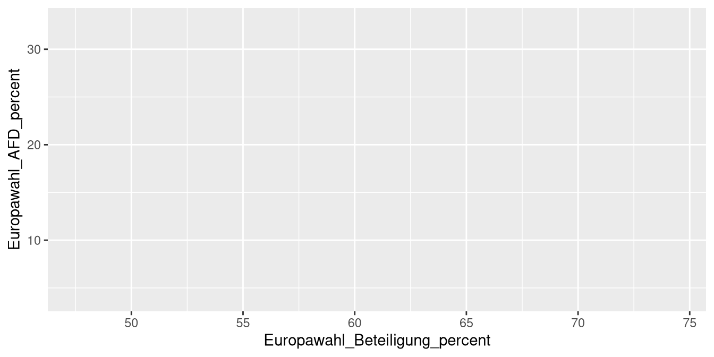

8 Grafiken
8.1 Allgemeines
Grafiksysteme
Mit R lassen sich Graphiken auf ganz unterschiedliche Weise erzeugen:
- Mit dem vorinstallierten Graphiksystem (base R) lassen sich schnell und unkompliziert vollständige (High-Level) Graphiken erzeugen.
- Mit dem vorinstallierten Graphiksystem (base R) lassen sich jedoch auch (Low-Level) Graphiken von Grund auf aufbauen und können sehr individuell gestaltet werden.
- Mit verschiedenen Packages lassen sich mit vertretbarem Aufwand ansprechende
und beliebig komplexe (Medium-Level) Graphiken erstellen. Hierunter zählt v.a.
ggplot2aus demtidyverse.
Grundfunktionen in base R
| Grafiktyp | Base R Funktion |
|---|---|
| (Datentyp abhängig) | plot() |
| Balkendiagramm | barplot() |
| Histogram | hist() |
| Boxplot | boxplot() |
| Kreisdiagramm | pie() |
Argumente Grundfunktion in base R
Fast alle Grafiken können mit folgenden Argumenten näher definiert werden:
main = "…": Überschriftcol = "…": Farbe; Mehrere Farben mitc("…", "…", …)eingebenxlab = "…": Titel der x-Achseylab = "…": Titel der y-Achsexlim = c(…, …): Achsenlimits x-Achseylim = c(…, …): Achsenlimits y-Achse …
Farben
Farben können als:
- Farbname (“red”), siehe die Datei Farben in R (im moodle-Kurs)
- HEX-Code (“#FF8000FF”),
- oder RGB-Code (“229, 245, 249”)
eingetragen werden.
8.2 Grafiken für univariate Verteilungen
8.2.1 Kreisdiagramme
Kreisdiagramme mit pie() erstellen
- Datenformat: Variable in Häufigkeitstabelle (
table())
8.2.2 Balkendiagramme
Balkendiagramme mit barplot() erstellen
- Datenformat: Variable in Häufigkeitstabelle (
table())
Mit einigen zusätzlichen Optionen:
barplot(tab,
main = "Absolute Häufigkeiten der Gruppen",
col = c("coral2", "darkcyan", "goldenrod3"),
names.arg = c("Kontrollgruppe", "Pilates", "Yoga"),
ylab = "Absolute Häufigkeit",
ylim = c(0, 50))Beschriften der Balken
Es gibt auch die Möglichkeit die jeweiligen Häufigkeiten über den einzelnen Balken abzutragen mit dem Befehl text(x,y,labels) können diese Labels eingefügt werden
x: die x Koordinaten der Labels, hier den bereits erstellten Barploty: die y Koordinaten der Labels, da diese dem table entnommen werden kann hier das erstellte table genommen werden. Es muss allerdings noch ein gewisser Wert aufgrechnet werden, damit die Zahlen über den Balken stehenlabels: die eigentlichen Inhalte der Labels. Hier wird auch das table angegeben
8.2.3 Histogramme
hist(x, breaks, freq, …) zeigt die Verteilung einer Variablen in einem Histogramm.
x: Variable, für die das Histrogramm erzeugt werden soll (wird mit dem$-Operator ausgewählt)breaks: Wie viele Balken sollen gebildet werden?- Keine Angabe: Automatische Auswahl
- Einzelne Zahl n: Daten werden in n Balken geteilt
- Vektor: Balken werden zwischen den angegebenen Stellen gebildet
- z.B.
breaks = c(0,1,2,3)\(\rightarrow\) 3 Balken: 0 bis 1, 1 bis 2 und 2 bis 3 - z.B.
breaks = seq(0,100,20)\(\rightarrow\) erstellt Werte im Schritt von 20 im Bereich zwischen 0 und 100 (5 Balken)
- z.B.
freq: Soll statt der absoluten die relative Häufigkeit geplottet werden? (TRUE= ja)

Mit einigen zusätzlichen Optionen:
8.2.4 Boxplot
boxplot(x, range =, …) erstellt einen bzw. mehrere Boxplots
x: kann Vektor, Dataframe oder Formel sein- Bei Eingabe eines Dataframes werden Boxplots für alle enthaltenen Variablen erzeugt
- Formeln ermöglichen Trennung nach Gruppen (s.u.)
range: Definiert die maximale Länge des Whiskers- Werte außerhalb werden als Ausreißer dargestellt
- z.B.:
range = 2(2 * Interquatilabstand bzw. Boxlänge) - default:
range = 1.5
...: Weitere Graphikparameter
8.3 Grafiken für bivariate Verteilungen
8.3.1 Verteilung einer metrischen auf eine kategoriale Variabel
Mithilfe von Boxplots lässt sich auch die Verteilung einer kategorialen Variable auf eine metrische Variable
boxplot(A ~ B + C + …) erzeugt Boxplots für alle möglichen Kombinationen von Faktorstufen getrennt
A: metrische abhängige VariableB + C: Kategoriale Variablen nach deren Ausprägungen aufgeschlüsselt wird
8.3.2 Verteilung zweier metrischer Variablen
Für zwei metrische Variablen wird meistens die Darstellungsform des Streudiagramms gewählt, was mit dem Befehl plot(x,y,...) erstellt werden kann.
x: Erste Variable ()y: Zweite Variable...: Weitere Graphikparameter (z.B.pch: Punkttyp \(\rightarrow\)?pch)
plot(dataset$item1, dataset$item2,
ylab = "item1", xlab = "item2",
main = "Streudiagramm von Item 1 und Item 2",
xlim = c(0, 6), ylim = c(0, 6), pch = 18, col = "firebrick4")
Der Befehl abline() wird (separat) im Anschluss von plot() ausgeführt
Mit abline(h = ..., v = ... , lwd = ..., lty = ...) können horizontale (h) bzw. vertikale (v) Linien an beliebiger Position eingefügt werden
h/v: Wert durch welchen die Linie verlaufen solllwd: legt die Stärke (Dicke) der Geraden fest (default = 1)lty: legt den Linientyp fest (s.?par)
plot(dataset$item1, dataset$item2,
ylab = "Item 2", xlab = "Item 1",
main = "Streudiagramm von Item 1 und Item 2",
xlim = c(0, 6), ylim = c(0, 6),
pch = 18,
col = "firebrick4")
abline(h = mean(dataset$item2),
v = mean(dataset$item1),
col = "black",
lty = 2)
Mit abline(fit) wird die Regressionsgerade in das bestehende Streudiagramm eingezeichnet
- fit entspricht dem definierten Modell, z.B. fit = lm(item2 ~ item1)
model4 <- item2 ~ item1
fit4 <- lm(model4, dataset)
plot(dataset$item1, dataset$item2,
ylab = "Item 2", xlab = "Item 1",
main = "Streudiagramm von Item 1 und Item 2",
sub = "Item 2 = 3.5000 - 0.6667 * Item 1",
xlim = c(0, 6), ylim = c(0, 6),
pch = 18,
col = "firebrick4")
abline(fit4,
lwd = 2,
col = "darkslategrey",
lty = 2)Achsen anpassen
Es gibt die Möglichkeit die Achsen noch zusätzlich anzupassen. Dafür müssen aber zuerst die ursprünglichen Achsen gelöscht werden. Das funktioniert über das zusätzliche Argument axes = FALSE in der plot()-Funktion
Mit dem Befehl axis(side, at, col) können im Nachhinein die Achsen angepasst werden.
side: Kann entweder 1 für unten (x-Achse), 2 für links (y-Achse), 3 für oben, 4 für rechtsat: ein Vektor mit dem die ticks auf den Achsen festgelegt werden könnencol: Die Farbe der Achsen
8.4 ggplot
8.4.1 Aufbau
Die Logik des Aufbaus von Graphiken in ggplot lehnt sich an die Ideen von Leland Wilkinson (The Grammar of Graphics) an.

Figure 8.1: Quelle: http://r.qcbs.ca/workshop03/book-en/grammar-of-graphics-gg-basics.html
8.4.2 Daten
Zunächst übergeben wir den ersten “Layer” der Graphik: die Daten.
Es passiert augenscheinlich noch nichts. Tatsächlich werden aber die Daten bereits hinterlegt.

8.4.3 Aesthetics
Im nächsten Schritt werden über das sogenannte Mapping die Aesthetics festgelegt. Hierbei wird festgelegt, welches graphische Merkmal die Daten representieren soll (z.B. Achsen, Farbe, Größe, etc.)
ggplot(data = df_regio,
mapping = aes(x = Europawahl_Beteiligung_percent,
y = Europawahl_AFD_percent))
8.4.4 Geome
Wie die Daten, in Form der Aesthetics, nun konkret dargestellt (besser: repräsentiert) werden (Linien, Striche, Punkte, etc.), wird durch sogenannte Geome festgelegt. Hierbei ist der Begriff der Layer wörtlich zunehmen. Geome können nämlich (beinahe) beliebig übereinandergelegt werden.
Die Geome werden mit + an die Basislayer gebunden. Damit wird deutlich, dass
es sich um zusätzliche Layer handelt. Außerdem wird klar, dass die Reihenfolge
der Geome relevant ist, da später hinzugefügte Geome die vorher hinzugefügten
überdecken können.
8.4.5 Geome - mapping
Ein kleiner Clou: manchmal sollen die Aesthetics (z.B. die Farbe) nur für ein bestimmtes Geom angepasst werden. Wir können die Eigenschaften der Daten auch auf ein spezifisches Geom mappen, ohne das global zu tun.
Beispiel: Die Farbe der Punkte soll sich nach alten und neuen Bundesländern unterscheiden, aber nur für die Punkte, nicht für die Randverteilung.
8.4.6 weitere Argumente
Gleichzeitig können auch statische ästetische Eigenschaften festgelegt werden, die nicht an Daten geknüpft sind.
Die Randverteilung im Plot soll grün (color) dargestellt werden und die Punkte
sollen durchsichtiger (alpha) und größer (size) werden.
8.4.7 Geome - Grundfunktionen
Es existieren eine Vielzahl von Geomen. Hier eine kleine Übersicht über die wichtigsten:
| Geom | Geometrische Objekt |
|---|---|
| geom_points() | Datenpunkte (Scatter-Plot) |
| geom_jitter() | Datenpunkte (Jitter-Plot) |
| geom_bar() | Balken |
| geom_histogram() | Histogramm |
| geom_boxplot() | Boxplot |
| geom_smooth() | Fit eines spezifizierten Zusammenhangs |
| geom_rug() | Marginale Verteilungen |
8.5 Ergänzungen
8.5.1 ggplot
8.5.1.1 Globale Einstellungen
Es lassen sich mit der Logik der Geome auch sämtliche globalen Aesthetics bearbeiten.
Der einfachste Weg führt über das Geom labs(). Hier können Titel (title = ""),
Untertitel (subtitle = ""), die Legendenüberschrift (in diesem Fall: color = "") oder die Achsenbeschriftungen (x = "", y = "") veränderbar.
Das allgemeine Erscheinungsbild lässt sich mit sogenannten Themes verändern. Das
Package ggtheme stellt dabei noch deutlich mehr Themes zur Verfügung.
Hinweis:
Weitere Eigenschaften lassen sich über theme() beherrschen. Diese Vorgehensweise
ist aber deutlich komplizierter und erfordert ein wenig Erfahrung im Umgang mit
diversen Online-Suchmaschinen ;-).
library(ggthemes)
ggplot(data = df_regio,
mapping = aes(x = Europawahl_Beteiligung_percent,
y = Europawahl_AFD_percent)) +
geom_point(mapping = aes(color = region)) +
geom_rug() +
labs(title = "Wahlerfolg der AfD in Abhängigkeit der Wahlbeteiligung",
subtitle = "Europawahl 2019, Alle Angaben in %",
x = "Wahlbeteiligung", y = "Wählerstimmen der AfD",
color = "Bundesländer") +
theme_economist()8.5.1.2 Plots als Objekte
Plots sind in R nichts anderes als umfangreiche Listen vom Typ “ggplot”.
Daher können wir auch Plots an Namen binden und im Nachhinein entsprechend aufrufen:
base_plot <- ggplot(data = df_regio,
mapping = aes(x = Europawahl_Beteiligung_percent,
y = Europawahl_AFD_percent))Sollen viele Plots nacheinander “durchprobiert” werden bietet sich diese Vorgehensweise entsprechend an:
8.5.1.3 Facets
Mithilfe von Facets lassen sich mehrere Plots in einer Graphic erstellen.
Hierfür nutzen wir das Geom facet_grid(). Die Daten werden hierbei nach den
hier übergebenen Variablen gruppiert und jeweils ein Plot in der Graphik
erstellt. Dabei können die Facets in Spalten (cols) oder Zeilen (rows)
angeordnet werden.
Deutlicher wird es an einem Beispiel.
Hinweis:
Die an facet_grid() übergebenen Variablen müssen erst als Variable expliziert
werden. Dies erfolgt mit vars().
8.5.1.4 Speichern von Graphiken mit GGSave
Das Speichern ist mit GGPlot komfortabel.
Hierzu wurde die Funktion ggsave() entwickelt. Vor dem Speichern muss die
Graphik als Objekt an einen Namen gebunden werden. Im Anschluss können wir die
Graphik an die Funktion übergeben.
Die Endung des Files gibt dabei das Datenformat vor, indem diese gespeichert werden soll.
Außerdem können wir in der Funktion weitere Parameter, wie die gewünschte Größe des Bildes, festlegen.
8.5.1.5 Erweiterungen
GGPlot wurde über die Zeit noch deutlich erweitert. Eine kleine Übersicht findet ihr .
Wir wollen uns noch kurz mit der Erweiterung GGForce und Viridis beschäftigen. findet ihr ausführliche Informationen zu GGForce.
Vorbereitung:
8.5.1.5.1 GGForce
gapminder %>%
filter(country %in% c("Burundi","Germany")) %>%
ggplot(aes(x = lifeExp, y = gdpPercap, color = country)) +
geom_point(alpha = 0.8, shape = 16, size = 1.7)Problem: Werte für Burundi “kleben” am Boden der Graphik und sind so praktisch nicht interpretierbar.
8.5.1.5.2 Viridis
Für viele nicht sichtbar: die Standardfarben von GGPlot sind nicht geeignet für
Personen mit Farbblidheit. Hier hilft das Package viridis.
gapminder %>%
filter(year == 2007) %>%
ggplot(aes(x = gdpPercap, y = lifeExp,
size = pop,color = continent)) +
geom_point(alpha = 0.8) +
scale_color_viridis_d() Letzter Hinweis
Das Erstellen und Anpassen von Graphiken kann durchaus noch viel komplexer werden. In dieser Sitzung gab es daher nur einen kleinen Einblick in die allgemeine Funktionsweise von GGPlot. Im Zweifel sollte einfach solange gegoogelt und rumprobiert werden, bis das gewünschte Ergebnis erzielt wurde.
Inspiration für unterschiedliche Typen von Graphiken liefert die https://r-graph-gallery.com
8.5.2 Tabellen
8.5.2.2 Korrelations Matrizen**
item1 item2 item3
item1 1.0000000 -0.7698004 0.6123724
item2 -0.7698004 1.0000000 -0.4714045
item3 0.6123724 -0.4714045 1.00000008.5.2.3 Formatierung
Das Package stargazer bietet den Befehl stargazer(...,type = "html", title = "title", out = "...",)
...: einen Vektor, Matrix, Datensatz oder Modelltype: Welches Dateiformat soll der Befehl ausgeben. Beispielsweise"html","latex"oder"text"title: Überschrift der Tabelleout: Name der Datei. Abhängig vontypeentweder mit.html,.texoder.txtam Ende. Wenn davor kein Dateipfad angegeben wird, wird die Datei im Projektordner gespeichert.
…noch viele weitere Möglichkeiten für Anpassungen. Siehe ?stargazer()
8.5.2.4 Anwendung an Beispielen
Korrelationstabelle
library(psych)
dataset <- read.table("data/Daten.txt", header = TRUE)
Korrelationstabelle<- cor(dataset[,2:4], method = "pearson")
Korrelationstabelle
item1 item2 item3
item1 1.0000000 -0.7698004 0.6123724
item2 -0.7698004 1.0000000 -0.4714045
item3 0.6123724 -0.4714045 1.0000000library(stargazer)
stargazer(Korrelationstabelle,
type = "html",
title = "Korellationstabelle",
out = "Korellationstabelle.html")Aussehen in der html Datei:

Für Übertragung in Word einfach in der html Dateien markieren, kopieren und in Word einfügen
Regressionsmodelle
fit1 <- lm(data = dataset, formula = item1 ~ item2 + item3)
summary(fit1)
Call:
lm(formula = item1 ~ item2 + item3, data = dataset)
Residuals:
Min 1Q Median 3Q Max
-0.75000 -0.33036 -0.08929 0.33036 0.64286
Coefficients:
Estimate Std. Error t value Pr(>|t|)
(Intercept) 2.8929 1.1752 2.462 0.0434 *
item2 -0.7143 0.2832 -2.523 0.0397 *
item3 0.3929 0.3003 1.308 0.2322
---
Signif. codes:
0 '***' 0.001 '**' 0.01 '*' 0.05 '.' 0.1 ' ' 1
Residual standard error: 0.5297 on 7 degrees of freedom
Multiple R-squared: 0.6726, Adjusted R-squared: 0.5791
F-statistic: 7.191 on 2 and 7 DF, p-value: 0.02008library(stargazer)
stargazer(fit1,
type = "html",
title = "Beispiel Regression",
out = "Regression.html")
library(stargazer)
stargazer(fit1,
type = "html",
title = "Beispiel Regression",
out = "Regression.html",
ci = TRUE,
covariate.labels = c("sozioökonomischer status",
"Alter","Konstante"),
dep.var.labels = "Einkommen",
dep.var.caption = "Abhängige Variable")ci: wennTRUEersetzt die angegebenen Standardfehler mit dem Konfifenzintervall für das Konfidenzniveau von 95 Prozentcovariate.labels: ein Character-Vektor, der die Namen der unabhängigen Variablen ersetztdep.var.labels: Name der abhängigen Variabledep.var.caption: Überschrift über die Abhängige Variable
Resultat